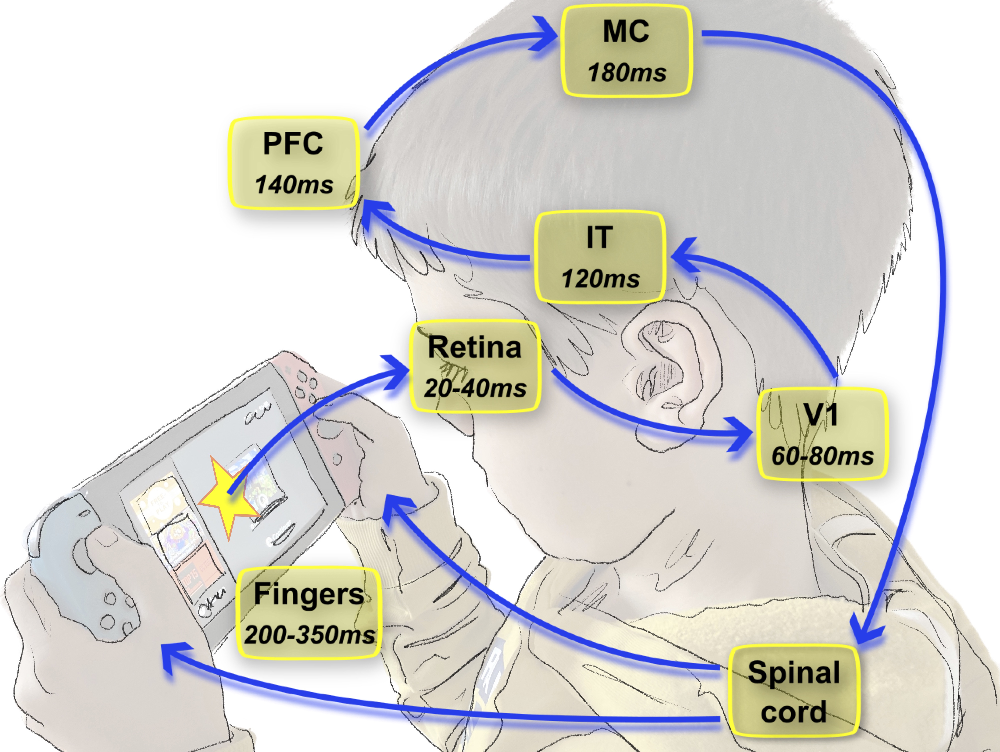

|
 |
|---|
https://laurentperrinet.github.io/slides/2022-11-21_flash-lag-effect
Timing in the visual pathways



Travelling waves?

Predictive coding


Flash-lag effect
Questions?
Ask info @ laurent.perrinet@univ-amu.fr
More info @ web-site
|
|
|
|---|
https://laurentperrinet.github.io/slides/2022-11-21_flash-lag-effect
Ask info @ laurent.perrinet@univ-amu.fr
More info @ web-site